Deep learning
With special contributions from Carl Pearson and Boris Ginsburg
Abstract
This chapter starts by introducing machine learning tasks. We then dive deeper into the classification task and introduce the perceptrons, a type of linear classifier that is foundational for understanding modern convolutional neural networks (CNN). We discussed how the forward inference and backward propagation training paths are implemented for both single-layer and multilayer perceptrons. On the basis of the conceptual and mathematical understanding of perceptrons, we present a basic convolutional neural network and the implementation of its major types of layers. We then present a CUDA kernel implementation of the convolutional layer, the most computationally intensive layer of CNN. We then present techniques for reducing convolutional layers to matrix multiplications by unrolling the input feature maps into a matrix. The conversation allows the convolution layers to benefit from the highly optimized GEMM libraries for GPUs. We also present the C and CUDA implementations of the unrolling procedure for the input matrix and discuss the pros and cons of the unrolling approach. We end the chapter with an overview of the CUDNN library, which is used by most deep learning frameworks. Users of these frameworks can benefit from the highly optimized layer implementations without writing CUDA kernels themselves.
Keywords
Convolutional neural network; machine learning; linear classifier; perceptron; deep learning; matrix multiplication; forward propagation; gradient backpropagation; stochastic gradient descent; training; chain rule; cuDNN
This chapter presents an application case study on deep learning, a recent branch of machine learning using artificial neural networks. Machine learning has been used in many application domains to train or adapt application logic according to the experience gleaned from datasets. To be effective, one often needs to conduct such training with a massive amount of data. While machine learning has existed as a subject of computer science for a long time, it has recently gained a great deal of practical industry acceptance for two reasons. The first reason is the massive amounts of data available from the pervasive use of the internet. The second reason is the inexpensive, massively parallel GPU computing systems that can effectively train application logic with these massive datasets. We will start with a brief introduction to machine learning and deep learning and then consider in more detail one of the most popular deep learning algorithms: convolutional neural networks (CNN). CNN have a high compute to memory access ratio and high levels of parallelism, which make them a perfect candidate for GPU acceleration. We will first present a basic implementation of a convolutional neural network. Next, we will show how we can improve this basic implementation with shared memory. We will then show how one can formulate the convolutional layers as matrix multiplication, which can be accelerated by using highly optimized hardware and software in modern GPUs.
16.1 Background
Machine learning, a term coined by Arthur Samuel of IBM in 1959 (Samuel, 1959), is a field of computer science that studies methods for learning application logic from data rather than designing explicit algorithms. Machine learning is most successful in computing tasks in which designing explicit algorithms is infeasible, mostly because there is not enough knowledge in the design of such explicit algorithms. That is, one can give examples of what should happen in various situations but not general rules for making such decisions for all possible inputs. For example, machine learning has contributed to the recent improvements in application areas such as automatic speech recognition, computer vision, natural language processing, and recommender systems. In these application areas, one can provide many input examples and what should come out for each input, but there is no algorithm that can correctly process all possible inputs.
The kinds of application logic that are created with machine learning can be organized according to the types of tasks that they perform. There is a wide range of machine learning tasks. Here, we show a few out of a large number:
- 1. Classification: to determine to which of the k categories an input belongs. An example is object recognition, such as determining which type of food is shown in a photo.
- 2. Regression: to predict a numerical value given some inputs. An example is to predict the price of a stock at the end of the next trading day.
- 3. Transcription: to convert unstructured data into textual form. An example is optical character recognition.
- 4. Translation: to convert a sequence of symbols in one language to a sequence of symbols in another. An example is translating from English to Chinese.
- 5. Embedding: to convert an input to a vector while preserving relationships between entities. An example is to convert a natural language sentence into a multidimensional vector.
The reader is referred to a large body of literature on the mathematical background and practical solutions to the various tasks of machine learning. The purpose of the chapter is to introduce the computation kernels that are involved in the neural network approach to the classification task. A concrete understanding of these kernels will allow the reader to understand and develop kernels for deep learning approaches to other machine learning tasks. Therefore in this section we will go into details about the classification task to establish the background knowledge that is needed to understand neural networks. Mathematically, a classifier is a function f that maps an input to k categories or labels:
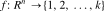
The function f is parameterized by θ that maps input vector x to numerical code y, that is,
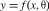
The parameter θ is commonly referred to as the model. It encapsulates weights that are learned from data. This definition of θ is best illustrated with a concrete example. Let us consider a linear classifier called a perceptron (Rosenblatt, 1957): 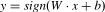
Fig. 16.1 shows a perceptron example in which each input is a two-dimensional (2D) vector 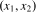 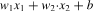 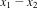 and a bias constant b. As shown in Fig. 16.1, the linear expression
and a bias constant b. As shown in Fig. 16.1, the linear expression
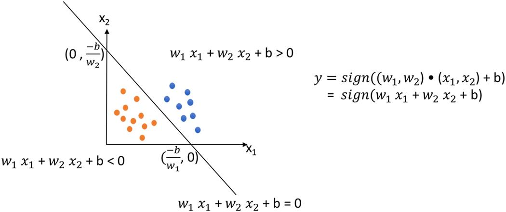
Visually, given a combination of and b values, we can draw a line in the 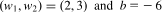 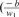 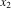 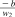 space, as shown in Fig. 16.1. For example, for a perceptron whose model is
space, as shown in Fig. 16.1. For example, for a perceptron whose model is  axis (
axis (
The process of computing the class for an input is commonly referred to as inference for the classifier. In the case of a perceptron we simply plug the input coordinate values into 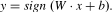
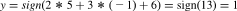
Therefore (5, −1) is classified to class 1, that is, it is among the blue dots.
Multilayer classifiers
Linear classifiers are useful when there is a way to draw hyperplanes (i.e., lines in a 2D space and planes in a three-dimensional [3D] space) that partition the space into regions and thus define each class of data points. Ideally, each class of data points should occupy exactly one such region. For example, in a 2D, 2-class classifier, we need to be able to draw a line that separates points of one class from those of the other. Unfortunately, this is not always feasible.
Consider the classifiers in Fig. 16.2. Assume that all input’s coordinates fall in the range of [0, 1]. The classifier should classify all points whose 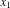 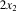 values are both greater than 0.5 (points that fall in the upper right quadrant of the domain) as class 1 and the rest as class −1. This classifier could be approximately implemented with a line like that shown in Fig. 16.2(A). For example, a line
values are both greater than 0.5 (points that fall in the upper right quadrant of the domain) as class 1 and the rest as class −1. This classifier could be approximately implemented with a line like that shown in Fig. 16.2(A). For example, a line  +
+  and
and  are both greater than 0.5 but the sum is less than 1.5, for example, (0.55, 0.65), would be misclassified into class −1 (blue). This is because any line will necessarily either cut away part of the upper right quadrant or include part of the rest of the domain. There is no single line that can properly classify all possible inputs.
are both greater than 0.5 but the sum is less than 1.5, for example, (0.55, 0.65), would be misclassified into class −1 (blue). This is because any line will necessarily either cut away part of the upper right quadrant or include part of the rest of the domain. There is no single line that can properly classify all possible inputs.
A multilayer perceptron (MLP) allows the use of multiple lines to implement more complex classification patterns. In a multilayer perceptron, each layer consists of one or more perceptrons. The outputs of perceptrons in one layer are the inputs to those in the next layer. An interesting and useful property is that while the inputs to the first layer have an infinite number of possible values, the output of the first layer and thus the input to the second layer can have only a modest number of possible values. For example, if the perceptron from Fig. 16.1 was used as a first layer, its outputs would be restricted to {−1, 0, 1}.
Fig. 16.2(B) shows a two-layer perceptron that can precisely implement the desired classification pattern. The first layer consists of two perceptrons. The first one, 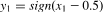 coordinate is greater than 0.5 as class 1; that is, the output value is 1. The rest of the points are classified as either class −1 or class 0. The second classifier in the first layer, , classifies all points whose
coordinate is greater than 0.5 as class 1; that is, the output value is 1. The rest of the points are classified as either class −1 or class 0. The second classifier in the first layer, , classifies all points whose  coordinate is greater than 0.5 into class 1. The rest of the points are classified as class −1.
coordinate is greater than 0.5 into class 1. The rest of the points are classified as class −1.
Therefore the output of the first layer ( 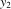 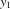 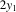 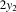 ,
,  space, shown in Fig. 16.2B. This can be done by a line
space, shown in Fig. 16.2B. This can be done by a line
Let us use the (0.55, 0.65) input that was misclassified by the single-layer perceptron in Fig. 16.2A. When processed by the two-layer perceptron, the upper perceptron of first layer in Fig. 16.2B generates 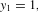 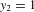 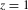
Note that a two-layer perceptron still has significant limitations. For example, assume that we need to build a perceptron to classify the input points shown in Fig. 16.3A. The values of the orange input points can result in input values (−1, −1) or (1, 1) to the second layer. We see that there is no way to draw a single line to properly classify the points in the second layer. We show in Fig. 16.2B that we can add another line by adding another perceptron in the second layer. The function would be 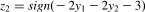 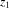 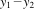 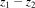 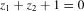
Layer 1 in Fig. 16.2B is a small example of a fully connected layer, in which every output ( 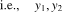 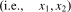
Fully connected layers become extremely expensive when m and n become large. The main reason is that a fully connected layer requires an m × n weight matrix. For example, in an image recognition application, n is the number of pixels in the input image, and m is the number of classifications that need to be performed on the input pixels. In this case, n is in the millions for high-resolution images, and m can be in the hundreds or more depending on the variety of objects that need to be recognized. Also, the objects can be of different scales and orientations in the images; many classifiers may need to be in place to deal with these variations. Feeding all these classifiers with all inputs is both expensive and likely wasteful.
Convolutional layers reduce the cost of fully connected layers by reducing the number of inputs each classifier takes and sharing the same weights across classifiers. In a convolutional layer, each classifier takes only a patch of the input image and performs convolution on the pixels in the patch based on the weights. The output is called an output feature map, since each pixel in the output is the activation result of a classifier. Sharing weights across classifiers allows the convolutional layers to have large numbers of classifiers, that is, large m values, without an excessive number of weights. Computationally, this can be implemented as a 2D convolution. However, this approach effectively applies the same classifier to a different part of an image. One can have different sets of weights applied to the same input and generate multiple output feature maps, as we will see later in this chapter.
Training models
So far, we have assumed that the model parameters used by a classifier are somehow available. Now we turn to training, or the process of using data to determine the values of the model parameters θ, including the weights  and the bias b. For simplicity we will assume supervised training, in which input data labeled with desired output values are used to determine the weight and bias values. Other training modalities, such as semisupervised and reinforcement learning, have also been developed to reduce the reliance on labeled data. The reader is referred to the literature to understand how training can be accomplished under such circumstances.
and the bias b. For simplicity we will assume supervised training, in which input data labeled with desired output values are used to determine the weight and bias values. Other training modalities, such as semisupervised and reinforcement learning, have also been developed to reduce the reliance on labeled data. The reader is referred to the literature to understand how training can be accomplished under such circumstances.
Error function
In general, training treats the model parameters as unknown variables and solves an inverse problem given the labeled input data. In the perceptron example in Fig. 16.1, each data point that is used for training would be labeled with its desired classification result: −1, 0, or 1. The training process typically starts with an initial guess of the  and b values and performs inference on the input data and generates classification results. These classification results are compared to the labels. An error function, sometimes referred to as a cost function, is defined to quantify the difference between the classification result and the corresponding label for each data point. For example, assume that y is the classification output class and t is the label. The following is an example error function:
and b values and performs inference on the input data and generates classification results. These classification results are compared to the labels. An error function, sometimes referred to as a cost function, is defined to quantify the difference between the classification result and the corresponding label for each data point. For example, assume that y is the classification output class and t is the label. The following is an example error function:
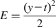
This error function has the nice property that the error value is always positive as long as there is any difference, positive or negative, between the values of y and t. If we need to sum up the error across many input data points, both positive and negative differences will contribute to the total rather than canceling each other out. One can also define the error as the absolute value of the difference, among many other options. As we will see, the coefficient 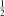
Stochastic gradient descent
The training process will attempt to find the model parameter values that minimize the sum of the error function values for all the training data points. This can be done with a stochastic gradient descent approach, which repeatedly runs different permutations of the input dataset through the classifier, evolves the parameter values, and checks whether the parameter values have converged in that their values have stabilized and changed less than a threshold since the last iteration. Once the parameter values converge, the training process ends.
Epoch
During each iteration of the training process, called an epoch, the training input dataset is first randomly shuffled, that is, permutated, before it is fed to the classifier. This randomization of the input data ordering helps to avoid suboptimal solutions. For each input data element, its classifier output y value is compared with the label data to generate the error function value. In our perceptron example, if a data label is (class) 1 and the classifier output is (class) −1, the error function value using  would be 2. If the error function value is larger than a threshold, a backpropagation operation is activated to make changes to the parameters so that the inference error can be reduced.
would be 2. If the error function value is larger than a threshold, a backpropagation operation is activated to make changes to the parameters so that the inference error can be reduced.
Backpropagation
The idea of backpropagation is to start with the error function and look back into the classifier and identify the way in which each parameter contributes to the error function value (LeCun et al., 1990). If the error function value increases when a parameter’s value increases for a data element, we should decrease the parameter value so that the error function value can decrease for this data point. Otherwise, we should increase the parameter value to reduce the error function value for the data point. Mathematically, the rate and direction in which a function’s value changes as one of its input variables changes are the partial derivative of the function over the variable. For a perceptron the model parameters and the input data points are considered input variables for the purpose of calculating the partial derivatives of the error function. Therefore the backpropagation operation will need to derive the partial derivative values of the error function over the model parameters for each input data element that triggers the backpropagation operation.
Let us use the perceptron 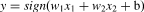 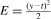 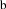 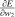 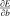 , and
, and  , and
, and  values.
values.
Chain rule
We see that E is a function of y and y is a function of 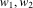 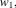 . Thus we can use the chain rule to derive these partial derivatives. For
. Thus we can use the chain rule to derive these partial derivatives. For
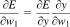
 is straightforward:
is straightforward:
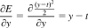
However, we face a challenge with Note that the sign function is not a differentiable function, as it is not continuous at 0. To solve this problem, the machine learning community commonly use a smoother version of the sign function that is differentiable near zero and close to the sign function value for x values away from 0. A simple example of such a smoother version is the sigmoid function 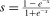 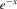 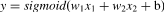 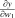 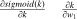 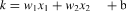 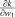 terms, and the sigmoid function value will be approximately −1. For x values that are positive with large absolute values, the
terms, and the sigmoid function value will be approximately −1. For x values that are positive with large absolute values, the  and
and
Putting it all together, we have
Similarly,
where
It should be clear that all the three partial derivative values can be completely determined by the combination of the input data ( ,
,  and t) and the current values of the model parameters (
and t) and the current values of the model parameters ( and The final step for the backpropagation is to modify the parameter values. Recall that the partial derivative of a function over a variable gives the direction and rate of change in the function value as the variable changes its value. If the partial derivative of the error function over a parameter has a positive value given the combination of input data and current parameter values, we want to decrease the value of the parameter so that the error function value will decrease. On the other hand, if the partial derivative of the error function of the variable has a negative value, we want to increase the value of the parameter so that the error function value will decrease.
and The final step for the backpropagation is to modify the parameter values. Recall that the partial derivative of a function over a variable gives the direction and rate of change in the function value as the variable changes its value. If the partial derivative of the error function over a parameter has a positive value given the combination of input data and current parameter values, we want to decrease the value of the parameter so that the error function value will decrease. On the other hand, if the partial derivative of the error function of the variable has a negative value, we want to increase the value of the parameter so that the error function value will decrease.
Learning rate
Numerically, we would like to make bigger changes to the parameters to whose change the error function is more sensitive, that is, when the absolute value of the partial derivative of the error function over this parameter is a large value. These considerations lead to us to subtract from each parameter a value that is proportional to the partial derivative of the error function over that parameter. This is accomplished by multiplying the partial derivatives with a constant  , called the learning rate constant in machine learning, before it is subtracted from the parameter value. The larger is, the faster the values of the parameters evolve so the solution can potentially be reached with fewer iterations. However, large
, called the learning rate constant in machine learning, before it is subtracted from the parameter value. The larger is, the faster the values of the parameters evolve so the solution can potentially be reached with fewer iterations. However, large  also increases the chance of instability and prevents the parameter values from converging to a solution. In our perceptron example, the modifications to the parameters are as follows:
also increases the chance of instability and prevents the parameter values from converging to a solution. In our perceptron example, the modifications to the parameters are as follows:
For the rest of this chapter we will use a generic symbol θ to represent the model parameters in formula and expressions. That is, we will represent the three expressions above with one generic expression:
The reader should understand that for each of these generic expressions one can replace θ with any of the parameters to apply the expression to the parameter.
Minibatch
In practice, because the backtracking process is quite expensive, it is not triggered by individual data points whose inference result differs from its label. Rather, after the inputs are randomly shuffled in an epoch, they are divided into segments called minibatches. The training process runs an entire minibatch through the inference and accumulates their error function values. If the total error in the minibatch is too large, backpropagation is triggered for the minibatch. During backpropagation the inference results of each data point in the minibatch are checked, and if it is not correct, the data is used to derive partial derivative values that are used to modify the model parameter values as described above.
Training multilayer classifiers
For multilayer classifiers the backpropagation starts with the last layer and modifies the parameter values in that layer as we discussed above. The question is how we should modify the parameters of the previous layers. Keep in mind that we can derive based on  , as we have demonstrated for the final layer. Once we have
, as we have demonstrated for the final layer. Once we have  for the previous layer, we have everything we need to calculate the modifications to the parameters in that layer.
for the previous layer, we have everything we need to calculate the modifications to the parameters in that layer.
A simple and yet important observation is that the output of the previous layer is also the input to the final layer. Therefore  of the previous layer is really the
of the previous layer is really the  of the final layer. Therefore the key is to derive
of the final layer. Therefore the key is to derive  for the final layer after we modify the parameter values of the final layer. As we can see below,
for the final layer after we modify the parameter values of the final layer. As we can see below,  is not that different from
is not that different from  , that is, .
, that is, .
 can be simply reused from the derivations for the parameters. is also quite straightforward since the inputs play the same role as the parameters as far as y is concerned. We simply need to do a partial derivative of the intermediate function k with respect to the inputs. For our perceptron example, we have
can be simply reused from the derivations for the parameters. is also quite straightforward since the inputs play the same role as the parameters as far as y is concerned. We simply need to do a partial derivative of the intermediate function k with respect to the inputs. For our perceptron example, we have
where . In the perceptron example in Fig. 16.2B,  of the final layer (layer 2) is
of the final layer (layer 2) is  , output of the top perceptron of layer 1 and
, output of the top perceptron of layer 1 and  is
is  , output of the bottom perceptron of layer 1. Now we are ready to proceed with the calculation of for the two perceptrons in the previous layer. Obviously, this process can be repeated if there are more layers.
, output of the bottom perceptron of layer 1. Now we are ready to proceed with the calculation of for the two perceptrons in the previous layer. Obviously, this process can be repeated if there are more layers.
Feedforward networks
By connecting layers of classifiers and feeding the output of each layer to the next, we form a feedforward network. Fig. 16.2B shows an example of a two-layer feedforward network. All our discussions on inference with and training of multilayer perceptrons (MLP) assume this property. In a feedforward network, all outputs of an earlier layer go to one or more of the later layers. There are no connections from a later layer output to an earlier layer input. Therefore the backpropagation can simply iterate from the final stage backwards with no complications caused by feedback loops.
16.2 Convolutional neural networks
A deep learning procedure (LeCun et al., 2015) uses a hierarchy of feature extractors to learn complex features, which can achieve more accurate pattern recognition results if there is enough training data to allow the system to properly train the parameters of all the layers of feature extractors to automatically discover an adequate number of relevant patterns. There is one category of deep learning procedures that are easier to train and that can be generalized much better than others. These deep learning procedures are based on a particular type of feedforward network called the convolutional neural network (CNN).
The CNN was invented in late 1980s (LeCun et al., 1998). By the early 1990s, CNNs had been applied to automated speech recognition, optical character recognition (OCR), handwriting recognition, and face recognition (LeCun et al., 1990). However, until the late 1990s the mainstream of computer vision and that of automated speech recognition had been based on carefully engineered features. The amount of labeled data was insufficient for a deep learning system to compete with recognition or classification functions crafted by human experts. It was a common belief that it was computationally infeasible to automatically build hierarchical feature extractors that have enough layers to perform better than human-defined application-specific feature extractors.
Interest in deep feedforward networks was revived around 2006 by a group of researchers who introduced unsupervised learning methods that could create multilayer, hierarchical feature detectors without requiring labeled data (Hinton et al., 2006, Raina et al., 2009). The first major application of this approach was in speech recognition. The breakthrough was made possible by GPUs that allowed researchers to train networks ten times faster than traditional CPUs. This advancement, coupled with the massive amount of media data available online, drastically elevated the position of deep learning approaches. Despite their success in speech, CNN were largely ignored in the field of computer vision until 2012.
In 2012 a group of researchers from the University of Toronto trained a large, deep convolutional neural network to classify 1000 different classes in the ILSVRC contest (Krizhevsky et al., 2012). The network was huge by the norms of the time: It had approximately 60 million parameters and 650,000 neurons. It was trained on 1.2 million high-resolution images from the ImageNet database. The network was trained in only one week on two GPUs using a CUDA-based convolutional neural network library written by Alex Krizhevsky (Krizhevsky). The network achieved breakthrough results with a winning test error rate of 15.3%. In comparison, the second-place team that used the traditional computer vision algorithms had an error rate of 26.2%. This success triggered a revolution in computer vision, and CNN became a mainstream tool in computer vision, natural language processing, reinforcement learning, and many other traditional machine learning areas.
This section presents the sequential implementation of CNN inference and training. We will use LeNet-5, the network that was designed in the late 1980s for digit recognition (LeCun et al., 1990). As shown in Fig. 16.4, LeNet-5 is composed of three types of layers: convolutional layers, subsampling layers, and fully connected layers. These three types of layers continue to be the key components of today’s neural networks. We will consider the logical design and sequential implementation of each type of layer. The input to the network is shown as a gray image with a handwritten digit represented as a 2D 32 × 32 pixel array. The last layer computes the output, which is the probability that the original image belongs to each one of the ten classes (digits) that the network is set up to recognize.
Convolutional neural network inference
The computation in a convolutional network is organized as a sequence of layers. We will call inputs to and outputs from layers feature maps or simply features. For example, in Fig. 16.4 the computation of the C1 convolutional layer at the input end of the network is organized to generate six output feature maps from the INPUT pixel array. The output to be produced for input feature maps consists of pixels, each of which is produced by performing a convolution between a small local patch of the feature map pixels produced by the previous layer (INPUT in the case of C1) and a set of weights (i.e., convolution filters as defined in Chapter 7: Convolution) called a filter bank. The convolution result is then fed into an activation function such as sigmoid to produce an output pixel in the output feature map. One can think of the convolutional layer for each pixel of an output feature map as a perceptron whose inputs are the patch of pixels in the input feature maps. That is, the value of each output pixel is the sum of convolution results from the corresponding patches in all input feature maps.
Fig. 16.5 shows a small convolutional layer example. There are three input feature maps, two output feature maps, and six filter banks. Different pairs of input and output feature map pairs in a layer use different filter banks. Since there are three input feature maps and two output feature maps in Fig. 16.5, we need 3 × 2 = 6 filter banks. For the C3 layer of LeNet in Fig. 16.4 there are six input feature maps and 16 output feature maps. Thus a total of 6 × 16 = 96 filter banks are used in C3.
Fig. 16.5B illustrates more details of the calculations done by a convolutional layer. We omitted the activation function for the output pixels for simplicity. We show that each output feature map is the sum of convolutions of all input feature maps. For example, the upper left corner element of output feature map 0 (value 14) is calculated as the convolution between the circled patch of input feature maps and the corresponding filter banks:
One can also think of the three input maps as a 3D input feature map and the three filter banks as a 3D filter bank. Each output feature map is simply the 3D convolution result of the 3D input feature map and the 3D filter bank. In Fig. 16.5B the three 2D filter banks on the left form a 3D filter bank, and the three on the right form a second 3D filter bank. In general, if a convolutional layer has n input feature maps and m output feature maps, n*m different 2D filter banks will be used. One can also think about these filter banks as m 3D filter banks. Although not shown in Fig. 16.4, all 2D filter banks used in LeNet-5 are 5×5 convolution filters.
Recall from Chapter 7, Convolution, that generating a convolution output image from an input image and a convolution filter requires one to make assumptions about the “ghost cells.” Instead of making such assumptions, the LeNet-5 design simply uses two elements at the edge of each dimension as ghost cells. This reduces the size of each dimension by four: two at the top, two at the bottom, two at the left, and two at the right. As a result, we see that for layer C1, the 32 × 32 INPUT image results in an output feature map that is a 28 × 28 image. Fig. 16.4 illustrates this computation by showing that a pixel in the C1 layer is generated from a square (5 × 5, although not explicitly shown) patch of INPUT pixels.
We assume that the input feature maps are stored in a 3D array X[C, H, W], where C is the number of input feature maps, H is the height of each input map image, and W is the width of each input map image. That is, the highest-dimension index selects one of the feature maps (often referred to as channels), and the indices of the lower two dimensions select one of the pixels in an input feature map. For example, the input feature maps for the C1 layer are stored in X[1, 32, 32], since there is only one input feature map (INPUT in Fig. 16.4) that consists of 32 pixels in each of the x and y dimensions. This also reflects the fact that one can think of the 2D input feature maps to a layer altogether as forming a 3D input feature map.
The output feature maps of a convolutional layer are also stored in a 3D array Y[M, H − K + 1, W − K + 1], where M is the number of output feature maps and K is the height (and width) of each 2D filter. For example, the output feature maps for the C1 layer are stored in Y[6, 28, 28], since C1 generates six output feature maps using 5×5 filters. The filter banks are stored in a four-dimensional array W[M, C, K, K].1 There are M × C filter banks. Filter bank W[m, c,_,_] is used when using input feature map X[c,_,_] to calculate output feature map Y[m,_,_]. Recall that each output feature map is the sum of convolutions of all input feature maps. Therefore we can consider the forward propagation path of a convolutional layer as set of M 3D convolutions in which each 3D convolution is specified by a 3D filter bank that is a C × K × K submatrix of W.
Fig. 16.6 shows a sequential C implementation of the forward propagation path of a convolutional layer. Each iteration of the outermost (m) for-loop (lines 04–12) generates an output feature map. Each iteration of the next two levels (h and w) of for-loops (lines 05–12) generates one pixel of the current output feature map. The innermost three loop levels (lines 08–11) perform the 3D convolution between the input feature maps and the 3D filter banks.
The output feature maps of a convolutional layer typically go through a subsampling layer (also known as a pooling layer). A subsampling layer reduces the size of image maps by combining pixels. For example, in Fig. 16.4, subsampling layer S2 takes the six input feature maps of size 28 × 28 and generates six feature maps of size 14 × 14. Each pixel in a subsampling output feature map is generated from a 2 × 2 neighborhood in the corresponding input feature map. The values of these four pixels are averaged to form one pixel in the output feature map. The output of a subsampling layer has the same number of output feature maps as the previous layer, but each map has half the number of rows and columns. For example, the number of output feature maps (six) of the subsampling layer S2 is the same as the number of its input feature maps, or the output feature maps of the convolutional layer C1.
Fig. 16.7 shows a sequential C implementation of the forward propagation path of a subsampling layer. Each iteration of the outermost (m) for-loop (lines 02–11) generates an output feature map. The next two levels (h and w) of for-loops (lines 03–11) generates individual pixels of the current output map. The two innermost for-loops (lines 06–09) sum up the pixels in the neighborhood. K is equal to 2 in our LeNet-5 subsampling example in Fig. 16.4. A bias value b[m] that is specific to each output feature map is then added to each output feature map, and the sum goes through a sigmoid activation function. The reader should recognize that each output pixel is generated by the equivalent of a perceptron that takes four of the input pixels in each feature map as its input and generates a pixel in the corresponding output feature map. ReLU is another frequently used activation function that is a simple nonlinear filter that passes only nonnegative values: Y = X, if X ≥ 0 and 0 otherwise.
To complete our example, convolutional layer C3 has 16 output feature maps, each of which is a 10 × 10 image. This layer has 6 × 16 = 96 filter banks, and each filter bank has 5 × 5 = 25 weights. The output of C3 is passed into the subsampling layer S4, which generates 16 5 × 5 output feature maps. Finally, the last convolutional layer C5 uses 16 × 120 = 1920 5 × 5 filter banks to generate 120 one-pixel output features from its 16 input feature maps.
These feature maps are passed through fully connected layer F6, which has 84 output units, in which each output is fully connected to all inputs. The output is computed as a product of a weight matrix W with an input vector X, and then a bias is added and the output is passed through sigmoid. For the F6 example, W is a 120×84 matrix. In summary, the output is an 84-element vector Y6 = sigmoid (W * X + b). The reader should recognize that this is equivalent to 84 perceptrons, and each perceptron takes all 120 one-pixel x values generated by the C5 layer as its input. We leave the detailed implementation of a fully connected layer as an exercise.
The final stage is an output layer that uses Gaussian filters to generate a vector of ten elements, which correspond to the probability that the input image contains one of the ten digits.
Convolutional neural network backpropagation
Training of CNNs is based on the stochastic gradient descent method and the backpropagation procedure that were discussed in Section 16.1 (Rumelhart et al., 1986). The training dataset is labeled with the “correct answer.” In the handwriting recognition example the labels give the correct letter in the image. The label information can be used to generate the “correct” output of the last stage: the correct probability values of the ten-element vector, where the probability of the correct digit is 1.0 and those for all other digits are 0.0.
For each training image, the final stage of the network calculates the loss (error) function as the difference between the generated output probability vector element values and the “correct” output vector element values. Given a sequence of training images, we can numerically calculate the gradient of the loss function with respect to the elements of the output vector. Intuitively, it gives the rate at which the loss function value changes when the values of the output vector elements change.
The backpropagation process starts by calculating the gradient of loss function  for the last layer. It then propagates the gradient from the last layer toward the first layer through all layers of the network. Each layer receives as its input
for the last layer. It then propagates the gradient from the last layer toward the first layer through all layers of the network. Each layer receives as its input  gradient with respect to its output feature maps (which is just the
gradient with respect to its output feature maps (which is just the  of the later layer) and computes its own
of the later layer) and computes its own  gradient with respect to its input feature maps, as shown in Fig. 16.8B. This process repeats until it finishes adjusting the input layer of the network.
gradient with respect to its input feature maps, as shown in Fig. 16.8B. This process repeats until it finishes adjusting the input layer of the network.
If a layer has learned parameters (“weights”) w, then the layer also computes its gradient of loss with respect to its weights, as shown in Fig. 16.8A. For example, the fully connected layer is given as y = w · x. The backpropagation of the gradient  is given by the following equation:
is given by the following equation:
This equation can be derived on an element-by-element basis, as we did for the two-layer perceptron example. Recall that each fully connected layer output pixel is calculated by a perceptron that takes the pixels in the input feature map as input. As we showed for training MLP in Section 16.1,  for one of the inputs x is the sum of products between
for one of the inputs x is the sum of products between  for each output y element to which the input element contributes and the w value via which the x value contributes to the y value. Because each row of the w matrix relates all the x elements (columns) to a y element (one of the rows) for the fully connected layer, each column of w (i.e., row of wT) relates all y ( elements back to an x (i.e.,
for each output y element to which the input element contributes and the w value via which the x value contributes to the y value. Because each row of the w matrix relates all the x elements (columns) to a y element (one of the rows) for the fully connected layer, each column of w (i.e., row of wT) relates all y ( elements back to an x (i.e.,  ) element, since transposition switches the roles of rows and columns. Thus the matrix-vector multiplication results in a vector that has the
) element, since transposition switches the roles of rows and columns. Thus the matrix-vector multiplication results in a vector that has the  values for all input x elements.
values for all input x elements.
Similarly, since each w element is multiplied by one x element to generate a y element, the  of each w element can be calculated as the product of an element of
of each w element can be calculated as the product of an element of  with an x element. Thus the matrix multiplication between
with an x element. Thus the matrix multiplication between  (a single-column matrix) and (a single-row matrix) results in a matrix of
(a single-column matrix) and (a single-row matrix) results in a matrix of  values for all w elements of the fully connected layer. This can also be seen as an outer product between the and vectors.
values for all w elements of the fully connected layer. This can also be seen as an outer product between the and vectors.
Let’s turn our attention to the backpropagation for a convolutional layer. We will start from the calculation of  from
from  , which will ultimately be used to calculate the gradients for the previous layer. The gradient
, which will ultimately be used to calculate the gradients for the previous layer. The gradient  with respect to the channel c of input x is given as the sum of the “backward convolution” with the corresponding W(m, c) over all the m layer outputs:
with respect to the channel c of input x is given as the sum of the “backward convolution” with the corresponding W(m, c) over all the m layer outputs:
The backward convolution through the and indexing allows the gradients of all output y elements that received contributions from an x element in the forward convolution to contribute to the gradient of that x element through the same weights. This is because in the forward inference of the convolutional layer, any change in the value of the x element is multiplied by these w elements and contributes to the change in the loss function value through these y elements. Fig. 16.9 shows the indexing pattern using a small example with 3 × 3 filter banks. The nine shaded y elements in the output feature map are the y elements that receive contributions from xh,w in forward interference. For example, input element xh,w contributes to yh−2,w−2 through multiplication with w2,2 and to yh,w through multiplication with w0,0. Therefore during backpropagation, should receive contribution from the  values of these nine elements, and the computation is equivalent to a convolution with a transposed filter bank wT.
values of these nine elements, and the computation is equivalent to a convolution with a transposed filter bank wT.
Fig. 16.10 shows the C code for calculating each element of for each input feature map. Note that the code assumes that  has been calculated for all the output feature maps of the layer and passed in with a pointer argument dE_dY. This is a reasonable assumption, since
has been calculated for all the output feature maps of the layer and passed in with a pointer argument dE_dY. This is a reasonable assumption, since  for the current layer is the
for the current layer is the  for its immediate next layer, whose gradients should have been calculated in the backpropagation before reaching the current layer. It also assumes that the space of
for its immediate next layer, whose gradients should have been calculated in the backpropagation before reaching the current layer. It also assumes that the space of  has been allocated in the device memory whose handle is passed in as a pointer argument dE_dX. The function generates all the elements of
has been allocated in the device memory whose handle is passed in as a pointer argument dE_dX. The function generates all the elements of  .
.
The sequential code for calculating for a convolutional layer computation is similar to that of  and is shown in Fig. 16.11. Since each W(m, c) affects all elements of output Y(m), we should accumulate gradients for each W(m, c) over all pixels in the corresponding output feature map:
and is shown in Fig. 16.11. Since each W(m, c) affects all elements of output Y(m), we should accumulate gradients for each W(m, c) over all pixels in the corresponding output feature map:
Note that while the calculation of  is important for propagating the gradient to the previous layer, the calculation of the
is important for propagating the gradient to the previous layer, the calculation of the  is key to the adjustments to the weight values of the current layer.
is key to the adjustments to the weight values of the current layer.
After the  values at all filter bank element positions have been computed, weights are updated to minimize the expected error using the formula presented in Section 16.1: w ← w − ε*
values at all filter bank element positions have been computed, weights are updated to minimize the expected error using the formula presented in Section 16.1: w ← w − ε*  , where ε is the learning rate constant. The initial value of ε is set empirically and reduced through the epochs according to the rule defined by user. The value of ε is reduced through the epochs to ensure that the weights converge to a minimal error. Recall that the negative sign of the adjustment term causes the change to be opposite to the direction of the gradient so that the change will likely reduce the error. Recall also that the weight values of the layers determine how the input is transformed through the network. The adjustment of these weight values of all the layers adapts the behavior of the network. That is, the network “learns” from a sequence of labeled training data and adapts its behavior by adjusting all weight values at all its layers for inputs whose inference results were incorrect and triggered backpropagation.
, where ε is the learning rate constant. The initial value of ε is set empirically and reduced through the epochs according to the rule defined by user. The value of ε is reduced through the epochs to ensure that the weights converge to a minimal error. Recall that the negative sign of the adjustment term causes the change to be opposite to the direction of the gradient so that the change will likely reduce the error. Recall also that the weight values of the layers determine how the input is transformed through the network. The adjustment of these weight values of all the layers adapts the behavior of the network. That is, the network “learns” from a sequence of labeled training data and adapts its behavior by adjusting all weight values at all its layers for inputs whose inference results were incorrect and triggered backpropagation.
As we discussed in Section 16.1, backpropagation is typically triggered after a forward pass has been performed on a minibatch of N images from the training dataset, and the gradients have been computed for this minibatch. The learned weights are updated with the gradients that are calculated for the minibatch, and the process is repeated with another minibatch.2 This adds one additional dimension to all previously described arrays, indexed with n, the index of the sample in the minibatch. It also adds one additional loop over samples.
Fig. 16.12 shows the revised forward path implementation of a convolutional layer. It generates the output feature maps for all the samples of a minibatch.
16.3 Convolutional layer: a CUDA inference kernel
The computation pattern in training a convolutional neural network is like matrix multiplication: It is both compute intensive and highly parallel. We can process different samples in a minibatch, different output feature maps for the same sample, and different elements for each output feature map in parallel. In Fig. 16.12 the n-loop (line 04, over samples in a minibatch), the m-loop (line 05, over output feature maps), and the nested h-w-loops (lines 06–07, over pixels of each output feature map) are all parallel loops in that their iterations can be executed in parallel. These four loop levels together offer a massive level of parallelism.
The innermost three loop levels, the c-loop (over the input feature maps or channels) and the nested p-q-loops (over the weights in a filter bank), also offer a significant level of parallelism. However, to parallelize them, one would need to use atomic operations in accumulating into the Y elements, since different iterations of these loop levels can perform read-modify-write on the same Y elements. Therefore we will keep these loops serial unless we really need more parallelism.
Assuming that we exploit the four levels of “easy” parallelism (n, m, h, w) in the convolutional layer, the total number of parallel iterations is the product N*M*H_out*W_out. This high degree of available parallelism makes the convolutional layer an excellent candidate for GPU acceleration. We can easily design a kernel with thread organizations that are designed to capture the parallelism.
We first need to make some high-level design decisions about the thread organization. Assume that we will have each thread compute one element of one output feature map. We will use 2D thread blocks, in which each thread block computes a tile of TILE_WIDTH × TILE_WIDTH pixels in one output feature map. For example, if we set TILE_WIDTH = 16, we would have a total of 256 threads per block. This captures part of the nested h-w-loop level parallelism in processing the pixels of each output feature map.
Blocks can be organized into a 3D grid in several different ways. Each option designates the grid dimensions to capture the n, m, and h-w parallelism in different combinations. We will present the details of one of the options and leave it as an exercise for the reader to explore different options and evaluate the potential pros and cons of each option. The option that we present in detail is as follows:
Fig. 16.13 shows the host code that launches a kernel based on the thread organization proposed above. The number of blocks in the X and Z dimensions of the grid are straightforward; They are simply M, the number of output feature maps, and N, the number of samples in a minibatch. The arrangement in the Y dimension is a little more complex and is illustrated in Fig. 16.14. Ideally, we would like to dedicate two dimensions of the grid indices to the vertical and horizontal tile indices for simplicity. However, we have only one dimension for both, since we are using X for the output feature map index and Z for the sample index in a minibatch. Therefore we linearize the tile indices to encode both the horizontal and vertical tile indices of output feature map tiles.
In the example in Fig. 16.14, each sample has four output feature maps (M = 4), and each output feature map consists of 2 × 2 tiles (H_grid = 2 in line 02 and W_grid = 2 in line 03) of 16 × 16 = 256 pixels each. The grid organization assigns each block to calculate one of these tiles.
We have already assigned each output feature map to the X dimension, which is reflected as the four blocks in the X dimension, each corresponding to one of the output feature maps. As shown in the bottom of Fig. 16.14, we linearize the four tiles in each output feature map and assign them to the blocks in the Y dimension. Thus tiles (0, 0), (0, 1), (1, 0), and (1, 1) are mapped using row-major order to the blocks with blockIdx.y values 0, 1, 2, and 3, respectively. Thus the total number of bocks in the Y dimension is 4 (T = H_grid*W_grid = 4 in line 04). Thus we will launch a grid with gridDim (4, 4, N) in lines 06–07.
Fig. 16.15 shows a kernel based on the thread organization above. Note that in the code, we use multidimensional indices in array accesses for clarity. We leave it to the reader to translate this pseudo-code into regular C, assuming that X, Y, and W must be accessed via linearized indexing based on row-major layout (Chapter 3, Multidimensional Grids and Data).
Each thread starts by generating the n (batch), m (feature map), h (vertical), and w (horizontal) indices of its assigned output feature map pixel. The n (line 06) and m (line 03) indices are straightforward, given the host code. For the h index calculation in line 04, the blockIdx.y value is first divided by W_grid to recover the tile index in the vertical direction, as illustrated in Fig. 16.13. This tile index is then expanded by the TILE_WIDTH and added to the threadIdx.y to form the actual vertical pixel index into the output feature map (line 04). The derivation of the horizontal pixel index is similar (line 05).
The kernel in Fig. 16.15 has a high degree of parallelism but consumes too much global memory bandwidth. As in the convolution pattern discussions in Chapter 7, Convolution, the execution speed of the kernel will be limited by the global memory bandwidth. As we also saw in Chapter 7, Convolution, we can use constant memory caching and shared memory tiling to dramatically reduce the global memory traffic and improve the execution speed of the kernel. These optimizations to the convolution inference kernel are left as an exercise for the reader.
16.4 Formulating a convolutional layer as GEMM
We can build an even faster convolutional layer by representing it as an equivalent matrix multiplication operation and then using a highly efficient GEMM (general matrix multiply) kernel from the CUDA linear algebra library cuBLAS. This method was proposed by Chellapilla et al. (2006). The central idea is unfolding and duplicating input feature map pixels in such a way that all elements that are needed to compute one output feature map pixel will be stored as one sequential column of the matrix that is thus produced. This formulates the forward operation of the convolutional layer to one large matrix multiplication.3
Consider a small example convolutional layer that takes as input C = 3 feature maps, each of which is of size 3 × 3, and produces M = 2 output features, each of which is of size 2 × 2, as shown in Fig. 16.5 and again, for convenience, at the top of Fig. 16.16. It uses M × C = 6 filter banks, each of which is 2 × 2. The matrix version of this layer will be constructed in the following way.
First, we will rearrange all input pixels. Since the results of the convolutions are summed across input features, the input features can be concatenated into one large matrix. Each input feature map becomes a section of rows in the large matrix. As shown in Fig. 16.16, input feature maps 0, 1, and 2 become the top, middle, and bottom sections, respectively, of the “input features X_unrolled” matrix.
The rearrangement is done so that each column of the resulting matrix contains all the input values necessary to compute one element of an output feature. For example, in Fig. 16.16, all the input feature pixels that are needed for calculating the value at (0, 0) of output feature map 0 are circled in the input feature maps:
where the first term of each inner product is a vector formed by linearizing the patch of x pixels circled in Fig. 16.16. The second term is a vector that is formed by linearizing the filter bank that is used for the convolution. In both cases, linearization is done by using the row-major order. It is also clear that we can reformulate the three inner products into one inner product:
As shown in the bottom of Fig. 16.16, the concatenated vector from the filter banks becomes row 0 of the filter matrix, and the concatenated vector from the input feature maps becomes column 0 of the input feature map unrolled matrix. During matrix multiplication the row of the filter bank matrix and the column of the input feature matrix will produce one pixel of the output feature map.
Note that matrix multiplication of the 2 × 12 filter matrix and the 12 × 8 input feature map matrix produces a 2 × 8 output feature map matrix. The top section of the output feature map matrix is the linearized form of output feature map 0, and the bottom is output feature map 1. Both are already in row-major order, so they can be used as individual input feature maps for the next layer. As for the filter banks, each row of the filter matrix is simply the row-major order view of the original filter bank. Thus the filter matrix is simply the concatenation of all the original filter banks. There is no physical rearrangement or relocation of filter elements that are involved.
We make an important observation that the patches of input feature map pixels for calculating different pixels of the output feature map overlap with each other, owing to the nature of convolution. This means that each input feature map pixel is replicated multiple times as we produce the expanded input feature matrix. For example, the center pixel of each 3 × 3 input feature map is used four times to compute the four pixels of an output feature, so it will be duplicated four times. The middle pixel on each edge is used two times, so it will be duplicated two times. The four pixels at corners of each input feature are used only one time and will not need to be duplicated. Therefore the total number of pixels in the expanded input feature matrix section is 4*1 + 2*4 + 1*4 = 16. Since each original input feature map has only nine pixels, the GEMM formulation incurs an expansion ratio of 16/9 = 1.8 for representing input feature maps.
In general, the size of the unrolled input feature map matrix can be derived from the number of input feature map elements that are required to generate each output feature map element. The height, or the number of rows, of the expanded matrix is the number of input feature elements contributing to each output feature map element, which is C*K*K: each output element is the convolution of K*K elements from each input feature map and there are C input feature maps. In our example, the K is 2 since the filter bank is 2 × 2 and there are three input feature maps. Thus the height of the expanded matrix should be 3*2*2 = 12, which is exactly the height of the matrix shown in Fig. 16.16.
The width, or the number columns, of the expanded matrix is the number of elements in each output feature map. If each output feature map is an H_out × W_out matrix, the number of columns of the expanded matrix is H_out*W_out. In our example, each output feature map is a 2 × 2 matrix, yielding four columns in the expanded matrix. Note that the number of output feature maps M does not play into the duplication. This is because all output feature maps are computed from the same expanded input feature map matrix.
The ratio of expansion for the input feature maps is the size of the expanded matrix over the total size of the original input feature maps. The reader should verify that the expansion ratio is as follows:
where H_in and W_in are the height and width, respectively, of each input feature map. In our example the ratio is (3*2*2*2*2)/(3*3*3) = 16/9. In general, if the input feature maps and output feature maps are much larger than the filter banks, the ratio of expansion will approach K*K.
The filter banks are represented as a filter bank matrix in a fully linearized layout, in which each row contains all weight values that are needed to produce one output feature map. The height of the filter bank matrix is the number of output feature maps (M). Computing different output feature maps involves sharing a single expanded input feature map matrix. The width of the filter bank matrix is the number of weight values that are needed for generating each output feature map element, which is C*K*K. Recall that there is no duplication when placing the weight values into the filter bank matrix. For example, the filter bank matrix is simply a concatenated arrangement of the six filter banks in Fig. 16.16.
When we multiply the filter bank matrix W by the expanded input matrix X_unrolled, the output feature maps are computed as a matrix Y of height M and width H_out*W_out. That is, each row of Y is a complete output feature map.
Let’s discuss now how we can implement this algorithm in CUDA. Let’s first discuss the data layout. We can start from the layout of the input and output matrices.
- 1. We assume that the input feature map samples in a minibatch will be supplied in the same way as those for the basic CUDA kernel. It is organized as an N × C × H × W array, where N is the number of samples in a minibatch, C is the number of input feature maps, H is the height of each input feature map, and W is the width of each input feature map.
- 2. As we showed in Fig. 16.16, the matrix multiplication will naturally produce an output Y stored as an M × (H_out*W_out) array. This is what the original basic CUDA kernel would produce.
- 3. Since the filter bank matrix does not involve duplication of weight values, we assume that it will be prepared ahead of time and organized as an M × C × K2 array as illustrated in Fig. 16.16.
The preparation of the unrolled input feature map matrix X_unroll is more complex. Since each expansion increases the size of input by up to K2 times, the expansion ratio can be very large for typical K values of 5 or larger. The memory footprint for keeping all sample input feature maps for a minibatch can be prohibitively large. To reduce the memory footprint, we will allocate only one buffer for X_unrolled [C*K*K*H_out*W_out]. We will reuse this buffer by looping over samples in the minibatch. During each iteration we convert the sample input feature map from its original form into the unrolled matrix.
Fig. 16.17 shows a sequential function that produces the X_unroll array by gathering and duplicating the elements of an input feature map X. The function uses five levels of loops. The innermost two levels of for-loop (w and h, lines 08–13) place one input feature map element for each of the output feature map elements. The next two levels (p and q, lines 06–14) repeat the process for each of the K*K filter matrix elements. The outermost loop repeats the process of all input feature maps. This implementation is conceptually straightforward and can be quite easily parallelized since the loops do not impose dependencies among their iterations. Also, successive iterations of the innermost loop (w, lines 10–13) read from a localized tile of one of the input feature maps in X and write into sequential locations (same row in X_unroll) in the expanded matrix X_unroll. This should result in efficient memory bandwidth usage on a CPU.
We are now ready to design a CUDA kernel which implements the input feature map unrolling. Each CUDA thread will be responsible for gathering (K*K) input elements from one input feature map for one element of an output feature map. The total number of threads will be (C * H_out * W_out). We will use one-dimensional thread blocks and extract multidimensional indices from the linearized thread index.
Fig. 16.18 shows an implementation of the unroll kernel. Note that each thread will build a K*K section of a column, shown as a shaded box in the Input Features X_Unrolled array in Fig. 16.16. Each such section contains all elements of a patch of the input feature map X from channel c, required for performing a convolution operation with the corresponding filter to produce one element of output Y.
Comparing the loop structures of Figs. 16.17 and 16.18 shows that the innermost two loop levels in Fig. 16.17 have been changed into outer level loops in Fig. 16.18. This interchange allows the work for collecting the input elements that are needed for calculating output elements to be done in parallel by multiple threads. Furthermore, having each thread collect all input feature map elements from an input feature map that are needed for generating an output generates a coalesced memory write pattern. As illustrated in Fig. 16.16, adjacent threads will be writing adjacent X_unroll elements in a row as they all move vertically to complete their sections. The read access patterns to X are similar and can be analyzed by an inspection of the w_out values for adjacent threads. We leave the detailed analysis of the read access pattern as an exercise.
An important high-level assumption is that we keep the input feature maps, filter bank weights, and output feature maps in the device memory. The filter bank matrix is prepared once and stored in the device global memory for use by all input feature maps. For each sample in the minibatch, we launch the unroll_Kernel to prepare an expanded matrix and launch a matrix multiplication kernel, as outlined in Fig. 16.16.
Implementing convolutions with matrix multiplication can be very efficient, since matrix multiplication is highly optimized on all hardware platforms. Matrix multiplication is especially fast on GPUs because it has a high ratio of floating-point operations per byte of global memory data access. This ratio increases as the matrices get larger, meaning that matrix multiplication is less efficient on small matrices. Accordingly, this approach to convolution is most effective when it creates large matrices for multiplication.
As we mentioned earlier, the filter bank matrix is an M × (C*K*K) matrix and the expanded input feature map matrix is a (C*K*K) × (H_out*W_out) matrix. Note that except for the height of the filter bank matrix, the sizes of all dimensions depend on products of the parameters to the convolution, not the parameters themselves. While individual parameters can be small, their products tend to be large. For example, it is often true that in early layers of a convolutional network, C is small, but H_out and W_out are large. On the other hand, at the end of the network, C is large, but H_out and W_out are small. Hence the product C*H_out*W_out is usually large for all layers. This means that the sizes of the matrices tend to be consistently large for all layers, and so the performance using this approach tends to be high.
One disadvantage of forming the expanded input feature map matrix is that it involves duplicating the input data up to K*K times, which can require the allocation of a prohibitively large amount of memory. To work around this limitation, implementations such as the one shown in Fig. 16.16 materialize the X_unroll matrix piece by piece, for example, by forming the expanded input feature map matrix and calling matrix multiplication iteratively for each sample of the minibatch. However, this limits the parallelism in the implementation, and can sometimes lead to cases where the matrix multiplications are too small to effectively utilize the GPU. Another disadvantage of this formulation is that it lowers the computational intensity of the convolutions because X_unroll must be written and read, in addition to reading X itself, requiring significantly more memory traffic than the direct approach. Accordingly, the highest performance implementation has even more complex arrangements in realizing the unrolling algorithm to both maximize GPU utilization while keeping the reading from DRAM minimal. We will come back to this point when we present the CUDNN approach in the next section.
16.5 CUDNN library
CUDNN is a library of optimized routines for implementing deep learning primitives. It was designed to make it much easier for deep learning frameworks to take advantage of GPUs. It provides a flexible and easy-to-use C-language deep learning API that integrates neatly into existing deep learning frameworks (e.g., Caffe, Tensorflow, Theano, Torch). The library requires that input and output data be resident in the GPU device memory, as we discussed in the previous section. This requirement is analogous to that of cuBLAS.
The library is thread-safe in that its routines can be called from different host threads. Convolutional routines for the forward and backward paths use a common descriptor that encapsulates the attributes of the layer. Tensors and filters are accessed through opaque descriptors, with the flexibility to specify the tensor layout using arbitrary strides along each dimension. The most important computational primitive in CNN is a special form of batched convolution. In this section we describe the forward form of this convolution. The CUDNN parameters that govern this convolution are listed Table 16.1.
Table 16.1
There are two inputs to the convolution:
- 1. D is a four-dimensional N × C × H × W tensor, which contains the input data.4
- 2. F is a four-dimensional K × C × R × S tensor, which contains the convolutional filters.
The input data array (tensor) D ranges over N samples in a minibatch, C input feature maps per sample, H rows per input feature map, and W columns per input feature map. The filters range over K output feature maps, C input feature maps, R rows per filter bank, and S columns per filter bank. The output is also a four-dimensional tensor O that ranges over N samples in the minibatch, K output feature maps, P rows per output feature map, and Q columns per output feature map, where P = f(H; R; u; pad_h) and Q = f(W; S; v; pad_w), meaning that the height and width of the output feature maps depend on the input feature map and filter bank height and width, along with padding and striding choices. The striding parameters u and v allow the user to reduce the computational load by computing only a subset of the output pixels. The padding parameters allow the user to specify how many rows or columns of 0 entries are appended to each feature map for improved memory alignment and/or vectorized execution.
CUDNN (Chetlur et al., 2014) supports multiple algorithms for implementing a convolutional layer: matrix multiplication–based GEMM (Tan et al., 2011) and Winograd (Lavin & Scott, 2016), FFT-based (Vasilache et al., 2014), and so on. The GEMM-based algorithm to implement the convolutions with a matrix multiplication is similar to the approach presented in Section 16.4. As we discussed at the end of Section 16.4, materializing the expanded input feature matrix in global memory can be costly in terms of both global memory space and bandwidth consumption. CUDNN avoids this problem by lazily generating and loading the expanded input feature map matrix X_unroll into on-chip memory only, rather than by gathering it in off-chip memory before calling a matrix multiplication routine. NVIDIA provides a matrix multiplication–based routine that achieves a high utilization of the maximal theoretical floating-point throughput on GPUs. The algorithm for this routine is similar to the algorithm described by Tan et al. (2011). Fixed-size submatrices of the input matrices A and B are successively read into on-chip memory and are then used to compute a submatrix of the output matrix C. All indexing complexities that are imposed by the convolution are handled in the management of tiles in this routine. We compute on tiles of A and B while fetching the next tiles of A and B from off-chip memory into on-chip caches and other memories. This technique hides the memory latency that is associated with the data transfer, allowing the matrix multiplication computation to be limited only by the time it takes to perform the arithmetic calculations.
Since the tiling that is required for the matrix multiplication routine is independent of any parameters from the convolution, the mapping between the tile boundaries of X_unroll and the convolution problem is nontrivial. Accordingly, the CUDNN approach entails computing this mapping and using it to load the correct elements of A and B into on-chip memories. This happens dynamically as the computation proceeds, which allows the CUDNN convolution implementation to exploit optimized infrastructure for matrix multiplication. It requires additional indexing arithmetic compared to a matrix multiplication, but it fully leverages the computational engine of matrix multiplication to perform the work. After the computation is complete, CUDNN performs the required tensor transposition to store the result in the user’s desired data layout.
16.6 Summary
This chapter started with a brief introduction to machine learning. It then dove more deeply into the classification task and introduced perceptrons, a type of linear classifier that is foundational for understanding modern CNN. We discussed how the forward inference and backward propagation training passes are implemented for both single-layer and MLP. In particular, we discussed the need for differentiable activation functions and how the model parameters can be updated through chain rules in a multilayer perceptron network during the training process.
Based on the conceptual and mathematical understanding of perceptrons, we presented a basic convolutional neural network and the implementation of its major types of layers. These layers can be viewed as special cases and/or simple adaptations of perceptrons. We then built on the convolution pattern in Chapter 7, Convolution, to present a CUDA kernel implementation of the convolutional layer, the most computationally intensive layer of CNN.
We then presented techniques for formulating convolutional layers as matrix multiplications by unrolling the input feature maps into a matrix. The conversion allows the convolutional layers to benefit from highly optimized GEMM libraries for GPUs. We also presented the C and CUDA implementations of the unrolling procedure for the input matrix and discussed the pros and cons of the unrolling approach.
We ended the chapter with an overview of the CUDNN library, which is used by most deep learning frameworks. Users of these frameworks can benefit from the highly optimized layer implementations without writing CUDA kernels themselves.
Exercises
- 1. Implement the forward pass for the pooling layer described in Section 16.2.
- 2. We used an [N × C × H × W] layout for input and output features. Can we reduce the memory bandwidth by changing it to an [N × H × W × C] layout? What are potential benefits of using a [C × H × W × N] layout?
- 3. Implement the backward pass for the convolutional layer described in Section 16.2.
- 4. Analyze the read access pattern to X in the unroll_Kernel in Fig. 16.18 and show whether the memory reads that are done by adjacent threads can be coalesced.